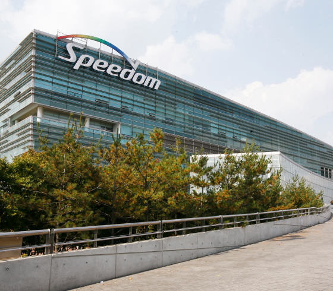
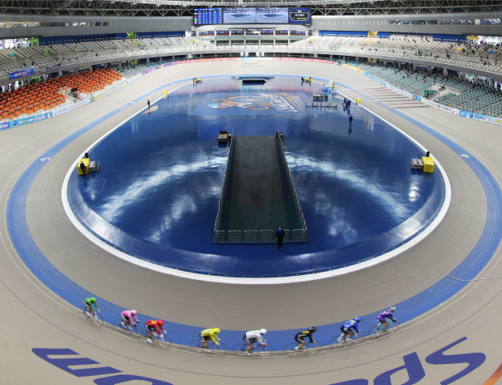

<!-- Header -->
<%- include('../_ejs_eng/top.ejs', {
    title: "KCYCLE 경륜",
    url: "../../"
}) %>

<!-- 레이아웃 -->
<div class="lytLayout">
    <div class="layoutArea">

        <!-- 상단영역 -->
        <div class="layoutTop">
            <!-- Top -->
            <%- include('../_ejs_eng/header.ejs', {
                url: "../../"
            }) %>
        </div>
        <!-- //상단영역 -->

        <!-- 중단영역 -->
        <div class="layoutContainer" id="container">

            <!-- 서브 콘텐츠 영역 -->
            <div class="layoutSubCont">

                <!-- 서브 컨텐츠 내용이 들어오는 영역-->
                <!-- 서브 탑 (타이틀) -->
                <%- include('../_ejs_eng/sub_top.ejs', {
                    location: ['총괄본부','광명스피돔'],
                    subTitle: '광명스피돔 안내',
                    subText: '국민체육진흥공단 경륜경정총괄본부가<br><b>건강한 세상</b>을 앞당기고 있습니다.',
                    url: "../../",
                    visualClass: "bg06",
                }) %>

                <div class="layoutContArea">
                    
                    <div class="cptContSpeedom">
                        <div class="contArea">
                            <div class="list">
                                <div class="img"></div>
                                <div class="cont">
                                    <div class="comTitH2 mRow">
                                        <h2>광명스피돔</h2>
                                        <p class="rightTxt">Cycle Stadium Speedome</p>
                                    </div>
                                    <div class="comBasicTxt">
                                        <p class="txt">
                                            국제 규격의 경주장, 광명스피돔에 대해 안내드립니다. <br />
                                            4계절 내내 경륜 경기가 펼쳐지는 실내 경주장이며 국제사이클 연맹의 표준규격에 맞춰 설치하여 규모에서나 시설에서나 국제적으로 손색이 없는 대한민국의 자랑입니다. <br />
                                            일반석, 특화공간, 고품격 TV관전소, 회원실에서 즐겁게 경주를 관람하실 수 있으며, 여가와 레저의 종합문화 구축하고 고품격의 인테리어로 마무리 함으로써 고객의 편의를 한층 더 세심하게 배려했습니다.<br />
                                            3층 카페테리아, 4층 고객식당이 있으며, 유아방, 어린이방, 초보교실, 야외 테라스, 대규모 라운지, 만남의 공간, 기타 휴게공간 등, 온 가족이 함께 즐길 수 있는 다양한 편익시설에도 만전을 기했습니다.
                                        </p>
                                    </div>
                                    <div class="infoTxt">
                                        <dl>
                                            <dt>위치</dt>
                                            <dd>경기도 광명시 광명로 721 (광명동) 광명스피돔</dd>
                                        </dl>
                                        <dl>
                                            <dt>면적</dt>
                                            <dd>건축면적: 39,670㎡<br />연면적: 76,033㎡</dd>
                                        </dl>
                                        <dl>
                                            <dt>경주장</dt>
                                            <dd>길이: 333.3m<br />주로폭: 9.8m<br />경사도: 직선 4도, 곡선 34.45도</dd>
                                        </dl>
                                    </div>
                                </div>
                            </div>
                            <div class="list bt">                                
                                <div class="cont">
                                    <div class="comTitH2 mRow">
                                        <h2>광명스피돔 VR투어·영상</h2>
                                    </div>
                                    <div class="comBasicTxt">
                                        <p class="txt">
                                            광명스피돔 내부의 중앙경기장, 2층로비, 광명스피돔라운지, 3층 로비, 경륜홍보관, 4층로비, 회원실을 보실수 있습니다.
                                        </p>
                                    </div>
                                    <div class="btnGrp">
                                        <a href="https://nareum1318.synology.me/speedom/tour.html" target="_blank">VR 투어보기</a>
                                        <a href="https://www.youtube.com/watch?v=YHbssY57_kg" target="_blank">VR 영상보기</a>
                                    </div>
                                    <dl class="vrInfo">
                                        <dt>VR전용 고글을 사용하실 경우 더욱 생동감 있는 영상으로 감상하실 수 있습니다.</dt>
                                        <dd>
                                            본 VR투어 및 VR영상은 ‘국민체육진흥공단 경륜경정총괄본부’ 와 ‘광명시청소년재단 나름청소년활동센터’가 협업으로 제작하였으며, 지역 명소인 ‘광명경륜장’을 홍보하기 위해 관내 청소년들이 많은 정성과 노력을 담아 기획‧촬영‧제작 모든 과정에 직접 참여한 의미 있는 결과물입니다.
                                        </dd>
                                    </dl>
                                </div>
                                <div class="img"></div>
                            </div>
                        </div>
                    </div>
                    
                </div>

                <!-- //서브 컨텐츠 내용이 들어오는 영역-->

                <!-- 서브 바텀 (담당자) -->
                <%- include('../_ejs_eng/sub_btm.ejs', {
                    team: '경륜서비스팀',
                    name: '신동헌',
                    phone: '02-2067-5822',
                    url: "../../",
                }) %>
                <!-- //서브 컨텐츠 내용이 들어오는 영역-->
                
            </div>
            <!-- //서브 콘텐츠 영역 -->

        </div>
        <!-- //중단영역 -->

        <!-- 하단영역 -->
        <div class="layoutFooter">
            <!-- Footer -->
            <%- include('../_ejs_eng/footer.ejs', {
                url: "../../"
            }) %>
        </div>
        <!-- //하단영역 -->

    </div>
</div>


<!-- Bottom -->
<%- include('../_ejs_eng/bottom.ejs', { }) %>